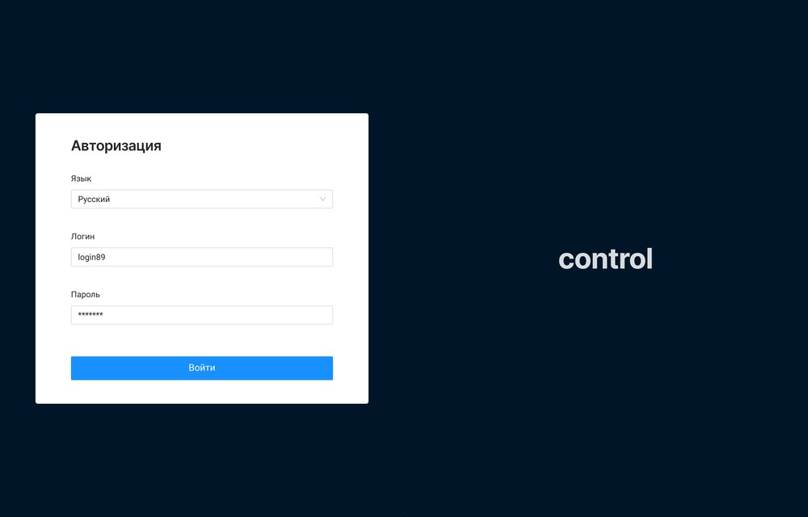
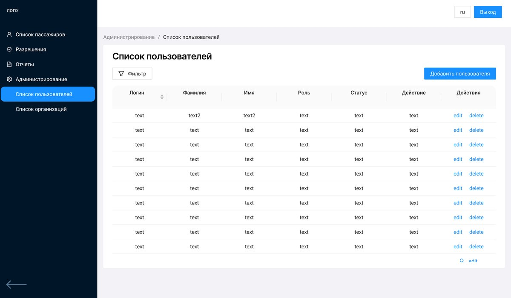
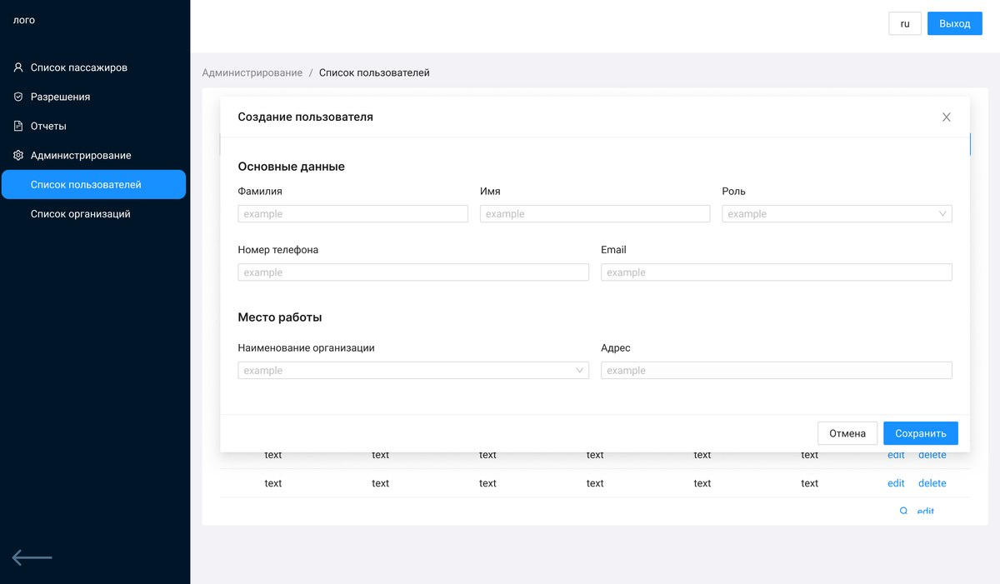
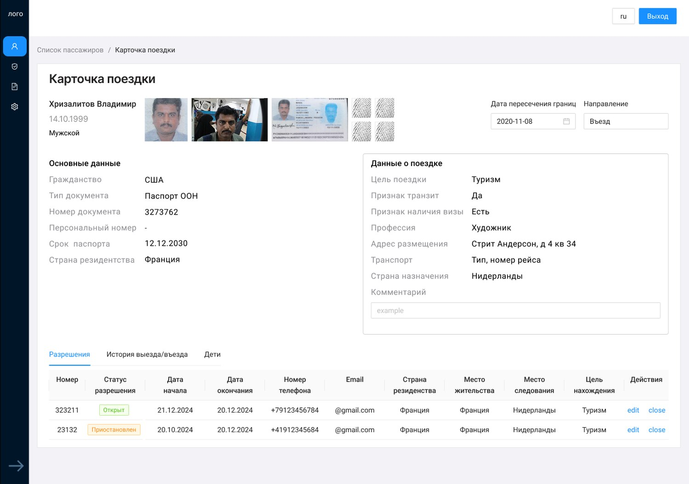
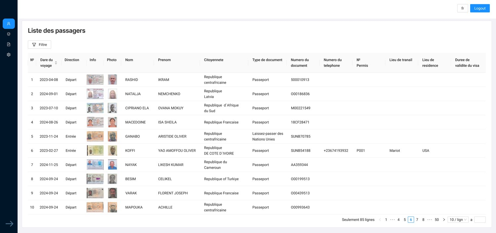
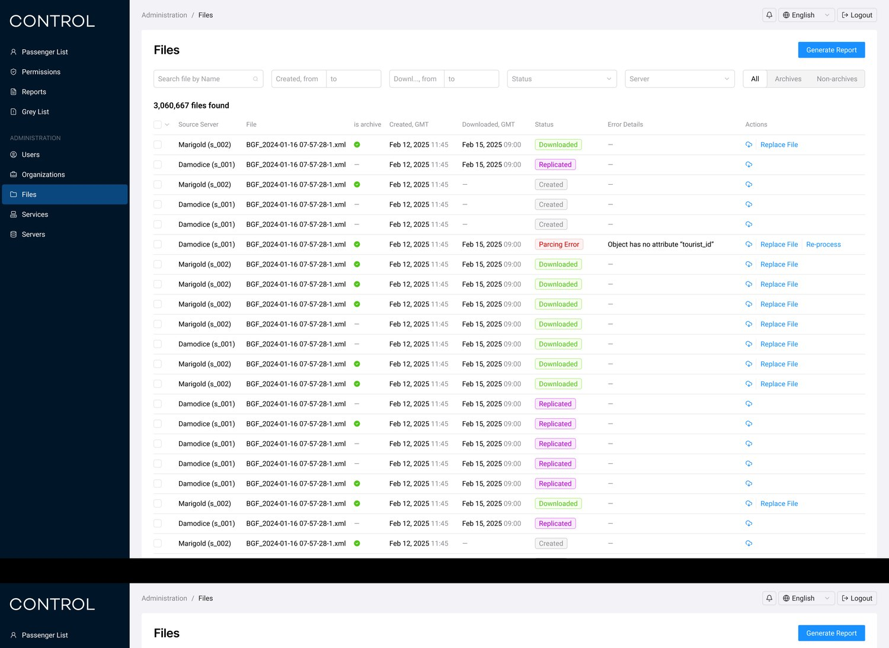
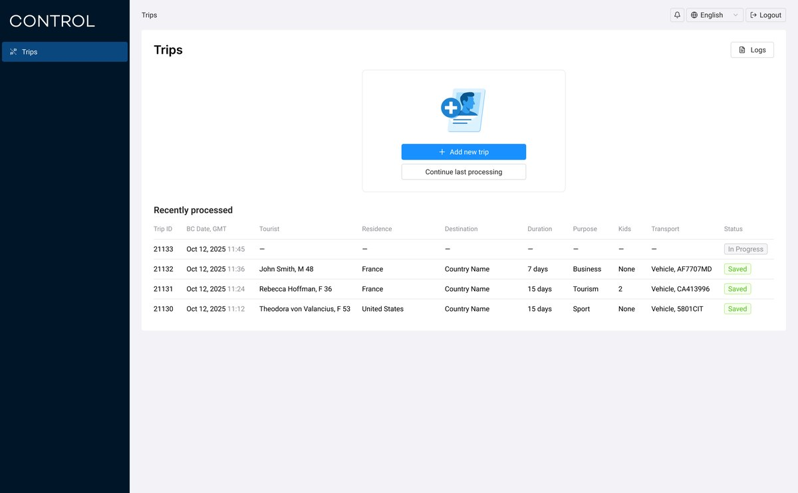
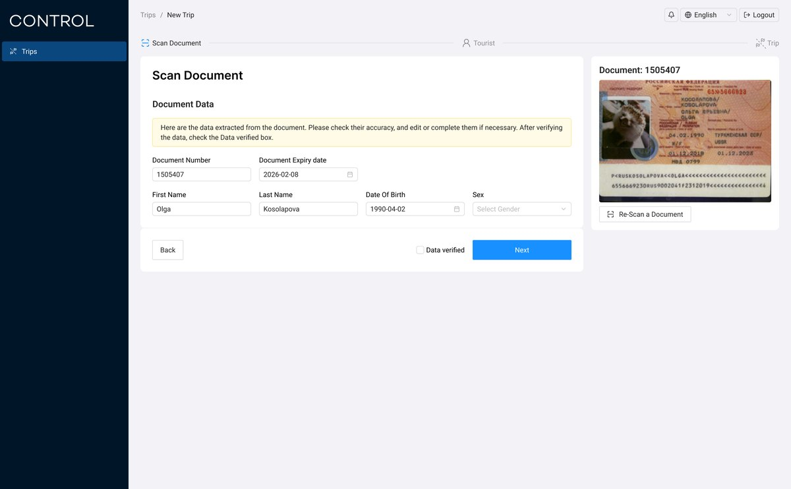
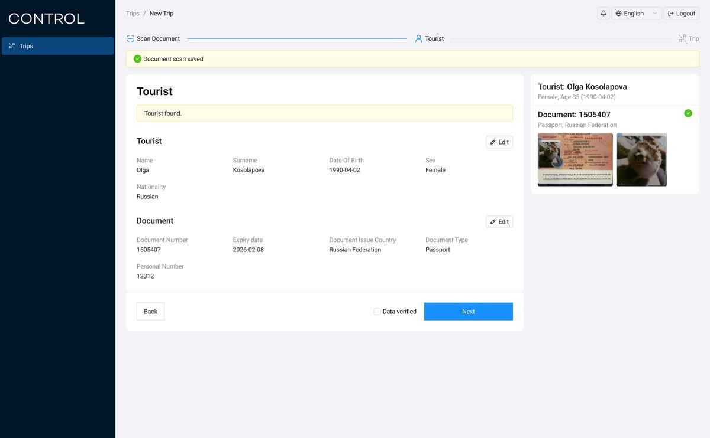
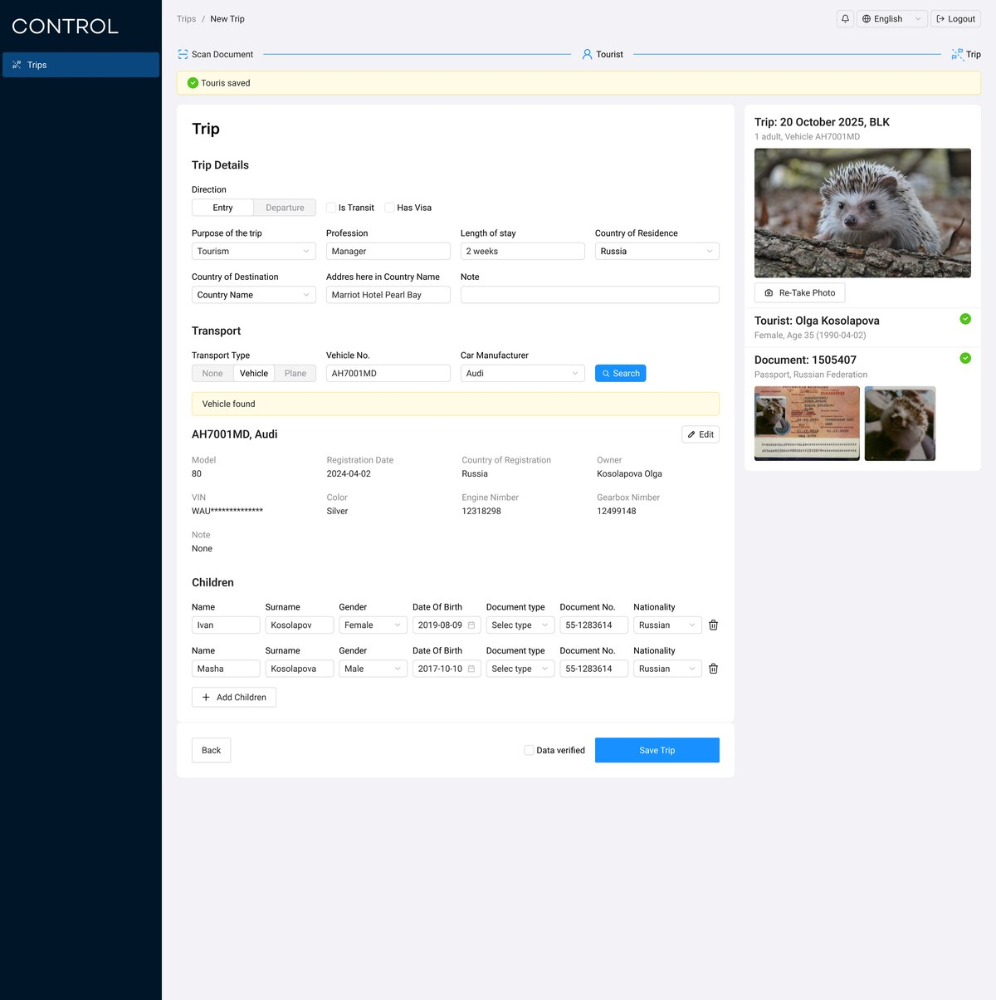

Web-приложение для сотрудников пограничного контроля — помогает быстро проверять историю пересечений границы, оформлять поездки туристов и администрировать саму систему.
Спроектировать web-приложение для сотрудников пограничного контроля, которое позволяет оперативно проверять историю пересечений границы конкретным человеком или транспортным средством и выявлять несанкционированные случаи. До этого нужные данные были разбросаны по нескольким разрозненным системам, и сотрудникам приходилось сверять их вручную — это замедляло проверку и повышало риск ошибки. Нужно было собрать всю информацию в едином интерфейсе, понятном при работе в условиях ограниченного времени на принятие решения.
Начала с интервью с сотрудниками пограничных служб, чтобы понять их повседневные сценарии работы и типичные проблемы в существующих инструментах. Составила карту пользовательских сценариев для разных ролей — инспектора на пункте пропуска, работающего в реальном времени, и администратора системы. На основе этого спроектировала шесть ключевых разделов приложения.
Вход в систему с выбором языка интерфейса — предусмотрела мультиязычность с самого входа, так как с системой работают сотрудники разных стран. Простая форма из логина и пароля, без лишних полей — на пункте пропуска важна скорость входа в начале смены.

Раздел администрирования — управление пользователями и организациями системы. Список пользователей с сортировкой и фильтром, добавление нового пользователя через модальное окно с базовыми данными (ФИО, роль, контакты) и местом работы. Отдельно от основного раздела проверки — администратор не должен путать управление доступом с рабочими сценариями инспектора.


Центральный экран для инспектора — карточка конкретной поездки: фото туриста, скан документа, отпечатки пальцев, основные данные (гражданство, тип и номер документа, срок действия) и данные о поездке (цель, признак транзита, наличие визы, адрес размещения, транспорт) на одном экране. Ниже — вкладки «Разрешения», «История выезда/въезда» и «Дети», чтобы не перегружать основной экран, но держать связанную информацию рядом. Статусы разрешений — например, «Открыт» или «Приостановлен» — выделены цветом для быстрого считывания.

Таблица всех пересечений границы — с фото документа и лица прямо в строке, фильтром и постраничной навигацией. Интерфейс полностью переведён под каждый язык интерфейса, включая формат дат и подписи столбцов.

Технический раздел для администраторов — контроль синхронизации файлов между серверами системы: статус каждого файла (создан, реплицирован, скачан, ошибка обработки), с деталями ошибки и возможностью повторной обработки или замены файла. Добавила массовые действия и фильтр по статусу и серверу — при тысячах записей вручную разбирать каждую строку нереально.

Пошаговый флоу для инспектора, когда нужно оформить новое пересечение границы: скан документа туриста с автоматическим распознаванием данных (номер, срок действия, ФИО, дата рождения) → подтверждение найденного туриста или создание нового → детали поездки (направление, цель, транзит, виза, транспорт) с поиском транспортного средства по номеру и подтягиванием данных о владельце → добавление детей, если турист путешествует с ними. На каждом шаге справа — сводка уже подтверждённых данных, чтобы инспектор не терял контекст поездки.




Интерфейс объединил данные, которые раньше приходилось сверять вручную по нескольким системам, в единый экран проверки — от карточки конкретной поездки до администрирования самой системы. Передала в разработку полный набор экранов: авторизацию, админ-панель, карточку поездки, список пассажиров, технический раздел файлов и пошаговый флоу оформления поездки инспектором.